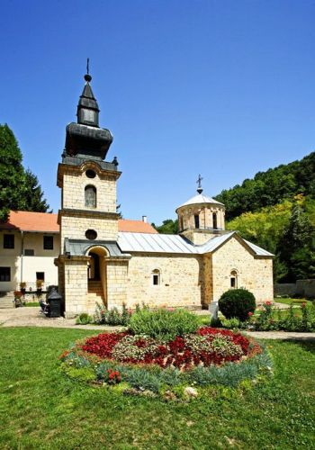
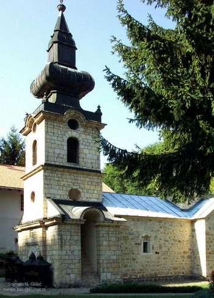
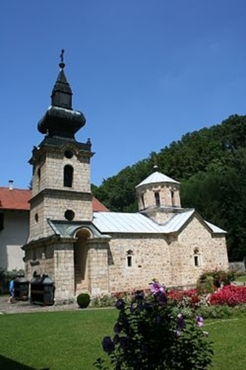
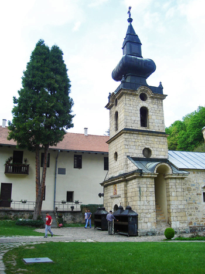
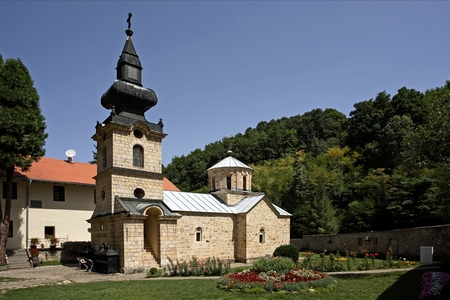
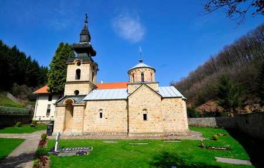

    Црква манастира Троноше, посвећена Ваведењу Богородице, подигнута је 1559, године, месеца маја, заслугом монаха-игумана Пајсија са братијом и Арсенијем и Генадијем из Папраће, који су одлучили да на старом црквишту граде нову цркву. Манастир се налази у Пoдрињу, у области која је почетком 15. века припадала птичарској нахији, данас на подручју села Корените у Горњој Малој. Утемељена је поред реке Велике Троноше, у крају који је још из средњег вела познат по рударству. према Троношком родослову, документу који је настао крајем 18. века, као ктитор Троноше помиње се Катарина, жена краља Драгутина, што би значило да је манастир основан још крајем 13. века, будући да у области која је од 1284. године припадала држави Стефана Драгутина. Савремена истраживања су показала да је Троношки родослов настао преписивањем старијих рукописа, али и да је писац тог родослова многе ствари испричао по свом личном нахођењу, очигледно гледајући у краљу Драгутину највећег Немањића.На основу исхода археолошких и архитектонских истраживања, извршених у манастиру Троноши, поуздано знамо да је црквена грађевина подигнута у 16. веку и да њени темељи не леже на старијем средњевековном здању. Вести из оснивачког документа које говоре да је манастир обновљен на старом црквишту могу се тумачити на два начина: или се односе на непосредну околину, где се можда и налазе остаци неке средњевековне цркве, или су подаци нетачни, наведени с намером да се олакша добијање дозволе за обнову , коју су издавале турске власти. Познато је да су Турци у то време одобравали обнову старих хришћанских храмова, али не и подизање нових на месту где не постоји старије сакрално здање,зато се често догађало да оснивачки документи из те епохе доказују старину локације позивајући се на прве ктиторе из времена државне самосталности и на такав начин обезбеђују грађење нових цркава. Манастир је основан као општежитије, што се наводи у оснивачком документу средином 16. века, када је та област припадала зворничком санџаку-сребреничком кудилуку, подручју које више није било непосредна погранична зона. Црква је грађена убрзо после обнове Пећке патријаршије 1557. године, у раздобљу великих градитељских подухвата српског народа у оквиру турске државе.
Место Троноша се и пре тог времена помиње у турским пописима. Према дефтеру за зворнички санџак који потиче из 1530. године, у нахији Птичар у попису кнежине кнеза Рашана, наведено је место Троноша. Од оснивања манастира па до осамдесетих година 17. века то подручје карактеришу релативно мирне политичке прилике. Тек крајем 17. века (од 1683. године) и кроз цео 18. век, са мањим прекидима, настају немирна времена испуњена аустријско-турским сукобима, који су донели многе недаће, рушења и паљења у тим областима, сада поново пограничним. У том нестабилном времену и манастир Троноша је био изложен великим страдањима. Међутим и у мирнијем раздобљу троношке историје поправљана је манастирска црква. Забележен је податак из 1625. године о монашком посланству које тражи и добија помоћ из Русије за обнову манастира, а у самој црквеној грађевини откривен је уклесан натпис, на пиластру тамбура куполе из 1655. године, који говори о обнови цркве. Постоје и писани подаци с краја 16. века о рукописним књигама насталим у Троноши (1571 и 1582), а једна од књига писана је за Троношу 1604. године у Јерусалиму. Крајем 17. века, у ратно време између 1683. и 1699. године разорене су готово све цркве и манастири у тим и другим областима. Нема поузданих писаних података о разарању Троноше у том периоду, али друга открића сведоче о томе да је и она доживела сличну судбину.  Археолошким ископавањима установљен је слој паљевине из тог периода, а истраживања изведена на архитектури цркве показала су да је некадашњи оловни покривач кровова скинут вероватно у то време. У Аустријско-турском рату (1788-1791) манастир Троноша постаје једно од места одакле је подстицана војна и политичка активност Српског народа. Посебно заслужан у том погледу био је угледни троношки архимандрид Стефан Јовановић. У то време организовања српских добровољачких одреда-фрајкора, који су заједно са аустријском војском водили борбу против Турака. Стефан Јовановић је сакупио одред од хиљаду људи, који су ратовали на том подручју. Разочаран исходом рата (Свиштовски мир 1791), повукао се са народом у Срем и после безуспешних дипломатских покушаја да се повољније реши српско питање, вратио се у манастир Троношу. Убрзо после тих догађаја отровали су га Турци у Зворнику 1799. године. У то време 1791. године, заслугом монаха Јосифа, настаје у Троноши познати Троношки родослов. После окончања рата уследиле су и обнове разорених и попаљених цркава и манастира. У једној од обнова учествовали су и монаси Троноше 1795. године, када је њиховим залагањем обновљен попаљен манастир Рача на Дрини. У то време доведен је у Троношу Вук Караџић, који је са осталом ђацима учио и радио у манастиру.
На самом почетку 19. века, 1800. године црква манастира Троноше је поново обновљена. О томе говори тешко читљив натпис угребан у фасадни камен на спољном зиду припрате. Из те значајне белешке сазнајемо да је тада црква покривена дрветом. Убрзо после поправке храма уследили су бурни догађаји првог и другог устанка, а у Троноши су се поново окупљале угледне личности устаничког покрета. Ново велико страдање забележено је 1814. године, када су Турци запалили цркву. Три године касније, 1817., поново је обновљена попаљена црква. Троноша је припојена територији Србије Милоша Обреновића тек 1833. године, када су Турци између шест нахија вратили Јадар и Рађевину. Годину дана касније, 1834. извршена је велика обнова манастирске цркве. Она је тада поново поправљена и живописана, а 1837. године покривена је лимом. Запис о обнови и живописању цркве забележено је изнад западних врата у наосу.
После ослобођења од Турака почели су многобројно подухвати на обнови разорених и оштећених сакралних здања и манастира. Још пре коначног ослобођења. добијање црквене аутономије 1830. године представљао је прекретницу у политичком и верском погледу. Уследили су одмах потом обимни грађевински подухвати у манастирима, где је најзначајнији исход био изградња звоника уз постојеће црквене грађевине. Попут осталих монашких заједница и у Троноши се гради монументални камени звоник. Постоји запис из кога се види да су житељи парохије троношке приложили цркви 1880. године звоно. Троноша непрекидно живи и поред многобројних разарања, која га нису мимоишла у раздобљу од преко четири стотина година.У току првог светског рата, Троноша наставља своју традицију активног учесника догађаја. У то време је у импровизованој болници у манастиру организована нега ратника. Последње веће страдање задесило је манастир у другом светском рату. У првим ратним данима, према причању мештана, тешко је оштећена манастирска економија цивилне зграде и домаћинство, а у цркви у северној певници, запаљене су црквене књиге. Том приликом уништени су највреднији рукописи манастирске ризнице.